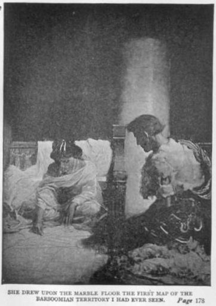

Phần còn lại trong chuyến hành trình về Thark không có sự cố gì. Chúng tôi trải qua hai mươi ngày đường, băng qua hai đáy biển và đi vòng quanh một số thành phố tiêu điều, phần lớn nhỏ hơn Korad. Hai lần chúng tôi băng qua những con kênh đào nổi tiếng của Hỏa tinh, như các nhà thiên văn học trên trái đất của chúng ta gọi. Khi tới những nơi này, một chiến binh được cử đi xa lên phía trước với một cái kính viễn vọng, và nếu không thấy một đội binh lớn người Hỏa tinh da đỏ nào, chúng tôi gom nhỏ đội hình càng sát càng tốt để không bị phát hiện và cắm trại cho tới tối, khi đó chúng tôi chậm rãi tiếp cận con đường có cây trồng, và định vị một trong những con đường đại lộ rộng lớn băng qua những khu vực đó vào những quãng thời gian nghỉ thông thường, bò một cách lặng lẽ và lén lút tới những vùng đất khô cằn ở phía bên kia. Mỗi lần băng qua như vậy mất khoảng năm giờ, và chuyến kế tiếp mất cả đêm, để có thể rời khỏi những cánh đồng có tường cao khi mặt trời ló dạng.
Khi băng qua bóng tối, tôi không nhìn thấy gì nhiều, trừ vầng trăng gần đang vội vã lướt nhanh qua bầu trời sao Hỏa, soi sáng những khoảnh đất nhỏ lúc này lúc khác, phơi bày ra những cánh đồng có tường bao bọc và những dãy nhà thấp nằm rải rác, có vẻ giống những nông trại trên trái đất. Có nhiều loại cây, được trồng theo hàng lối, trong đó có một số rất cao. Trong một số tường rào có nhiều súc vật, báo hiệu sự có mặt của chúng với những tiếng hí và thở phì phò khi nghe thấy mùi của chúng tôi - những con thú hoang dã và những con người còn hoang dã hơn.
Tôi chỉ trông thấy con người một lần duy nhất khi băng qua chỗ giao lộ với con đường cao tốc rộng màu trắng xẻ dọc theo vùng đất trồng trọt ngay ở trung tâm của nó. Người đó hẳn đang ngủ ở ven đường, vì khi tôi đến ngang chỗ hắn, hắn chống khuỷu tay nhổm dậy và sau khi thoáng nhìn thấy đoàn xe đang tới gần, hắn vùng đứng dậy và hốt hoảng chạy xuôi xuống con đường, trèo qua bức tường gần đó với sự nhanh nhẹn của một con mèo đang sợ hãi. Những người Thark không thèm chú ý đến hắn; họ không sẵn sàng gây chiến và dấu hiệu duy nhất cho thấy họ nhìn thấy hắn là đoàn xe di chuyển nhanh hơn, tiến vội về phía biên giới quạnh hiu đánh dấu lối vào lãnh thổ của Tal Hajus.
Tôi cũng không trò chuyện với Dejah Thoris lần nào, vì nàng không nói gì với tôi khi tôi tới cỗ xe của nàng, và lòng kiêu hãnh ngu ngốc của tôi ngăn tôi ngỏ lời trước với nàng. Tôi hoàn toàn tin chắc rằng cách xử sự của một người đàn ông đối với một phụ nữ tỷ lệ ngược với lòng dũng cảm của anh ta giữa những người đàn ông. Sự yếu đuối và khù khờ thường có khả năng lớn để mê hoặc phái đẹp, một chiến binh có thể đương đầu với hàng ngàn hiểm nguy thật sự mà không hề e sợ lại ngồi nấp trong bóng tối như một đứa trẻ con nhút nhát.
Đúng ba mươi ngày sau khi tôi tới Barsoom, chúng tôi tiến vào cố đô của người Thark, bộ lạc người da xanh này đã đánh cắp ngay cả cái tên của một dân tộc bị quên lãng từ lâu. Những bộ lạc người Thark có khoảng ba mươi ngàn người, được chia thành hai mươi lăm cộng đồng. Mỗi cộng đồng có riêng vị phó vương và các tù trưởng của nó, nhưng tất cả đều dưới quyền cai trị của Tal Hajus, Vua xứ Thark. Năm cộng đồng có thủ phủ của mình ở thành phố Thark, phần còn lại nằm rải rác ở các thành phố hoang vu khác của Hỏa tinh cổ đại thuộc phạm vi lãnh thổ của Tal Hajus.
Chúng tôi tiến vào quảng trường trung tâm rộng lớn vào đầu buổi chiều. Không có một sự đón chào thân thiện nồng nhiệt nào dành cho đoàn viễn chinh mới quay về. Những người tình cờ trông thấy gọi tên những chiến binh hay phụ nữ mà họ quen biết theo nghi thức chào hỏi, nhưng khi mọi người biết rằng đoàn xe mang về hai tù nhân thì họ bắt đầu chú ý nhiều hơn, và Dejah Thoris và tôi trở thành trung tâm của những đám người tò mò.
Chẳng bao lâu sau đó, chúng tôi được chỉ định vào nơi ở mới, và phần còn lại của ngày được chúng tôi dùng để ổn định bản thân với những điều kiện đổi thay. Nhà của tôi bây giờ nằm trên một đại lộ dẫn tới quảng trường từ phía nam, con đường huyết mạch mà chúng tôi đã hành quân qua từ cổng thành. Tôi ở đầu xa của dãy nhà và được chiếm toàn bộ tòa nhà. Phong cách kiến trúc ở đây giống như ở Korad, chỉ khác là có tỷ lệ to lớn hơn và giàu có hơn. Nơi ở của tôi xứng đáng để làm nơi cư ngụ cho vị hoàng đế lớn nhất trên trái đất, nhưng đối với những sinh vật kỳ quặc này một tòa nhà chẳng có gì là hấp dẫn ngoài kích thước và tầm cỡ của các gian phòng của nó. Tòa nhà càng rộng lớn thì càng đáng ước ao. Vì thế, Tal Hajus chiếm một nơi hẳn phải là một khu dinh thự công cộng khổng lồ, lớn nhất trong thành phố nhưng hoàn toàn không thích hợp cho mục đích cư ngụ. Tòa nhà lớn kế tiếp thuộc về Ptomel Lorquas, kế nữa là của vị phó vương có đẳng cấp thấp hơn, và cứ thế cho đến hết danh sách năm vị phó vương. Những chiến binh chiếm các tòa nhà của các tù trưởng mà họ tùy tùng, hoặc, nếu thích, họ có thể tìm nơi ở trong hàng ngàn tòa nhà bỏ không trong khu vực của mình. Mỗi cộng đồng được phân bố một phần nhất định của thành phố. Việc chọn lựa nhà được tiến hành theo các phân bố này, và tất cả bọn họ đều chiếm những tòa nhà hướng mặt ra quảng trường.
Khi đã tôi bố trí nhà cửa ngăn nắp, hay đúng hơn là thấy nó đã được thực hiện xong, trời đã hoàng hôn. Tôi vội vã ra ngoài để đến chỗ ở của Sola và những người nàng chăm sóc, vì tôi quyết định phải nói chuyện với Dejah Thoris và cố làm cho nàng nhận ra sự cần thiết phải tạm thời gác lại nỗi hờn giận cho tới khi tôi tìm ra cách trợ giúp nàng bỏ trốn. Tôi tìm kiếm một cách vô hiệu quả cho tới khi tia nắng cuối cùng của mặt trời đỏ rực đã biến mất sau phía chân trời và lúc ấy tôi trông thấy cái đầu xấu xí của Woola thò ra từ một cửa sổ ở tầng hai của tòa nhà ở phía đối diện trên chính con đường nơi tôi đang ở nhưng gần quảng trường hơn.
Không chờ có lời mời, tôi đi lên cầu thang xoáy dẫn tới tầng hai và bước vào một gian phòng lớn ở phía trước của toà nhà.Woola trung thành mừng đón tôi, nó phóng thân hình to lớn của nó vào người tôi, suýt làm tôi ngã lăn ra sàn nhà. Con vật tội nghiệp này mừng rỡ khi gặp tôi đến nỗi tôi cho rằng nó sẽ nuốt sống tôi, cái mõm của nó ngoác ra đến tận mang tai, phô bày ra ba hàng nanh với nụ cười quái quỷ của nó.
Tôi khẽ ra lệnh cho nó giữ im lặng rồi vội nhìn xuyên qua bóng tối lờ mờ để kiếm tìm Dejah Thoris, rồi gọi to khi không thấy nàng đâu cả. Có một tiếng đáp thì thầm từ góc xa của căn phòng, và chỉ với vài bước vội tôi đã đứng bên cạnh nàng, nơi nàng đang co người giữa đống lụa và da thú bên trên một cái trường kỷ cổ bằng gỗ có chạm khắc. Nàng đứng thẳng lên, nhìn thẳng vào mắt tôi và nói:
“Dotar Sojat người Thark sẽ làm gì với tù nhân Dejah Thoris của anh ta?”
“Dejah Thoris, tôi không biết rằng tôi đã làm cô nổi giận. Việc làm tổn thương hay xúc phạm cô, người mà tôi hy vọng sẽ bảo vệ và an ủi, nằm ngoài mong muốn của tôi. Nếu muốn, cô đừng để ý gì đến tôi nữa, nhưng cô phải giúp tôi trong việc tìm ra cách hữu hiệu để cô trốn thoát, nếu như điều đó có thể xảy ra, thì đó không phải là yêu cầu mà là mệnh lệnh của tôi. Khi cô đã an toàn trở lại trong cung điện của cha cô, cô có thể làm gì với tôi tùy ý, nhưng từ giờ cho tới ngày đó, tôi là chủ nhân của cô, và cô phải vâng lệnh và giúp đỡ tôi.”
Nàng nghiêm trang nhìn tôi một lúc lâu và tôi nghĩ rằng cơn giận của nàng đã dịu đi.
“Tôi hiểu lời anh nói, Dotar Sojat,” nàng đáp, “nhưng tôi không hiểu anh. Anh là một sự pha trộn kỳ quặc giữa một người đàn ông và một đứa trẻ con, giữa sự thô lỗ và cao thượng. Tôi ước gì có thể đọc thấu tim anh.”
“Hãy nhìn xuống chân cô, Dejah Thoris; nó nằm ở đó, nơi nó đã nằm kể từ đêm hôm đó ở Korad, và nó sẽ nằm ở đó mãi mãi, chỉ đập vì mỗi một mình cô cho tới khi cái chết buộc nó phải lặng im vĩnh viễn.”
Nàng tiến một bước ngắn tới gần tôi, đôi tay xinh đẹp của nàng chìa ra với một cử chỉ dò hỏi lạ lùng.
“Ý anh là gì, John Carter?” Nàng thì thầm, “Anh đang nói gì với tôi thế?”
“Tôi đang nói rằng tôi đã tự hứa với mình rằng tôi sẽ không nói chuyện với cô, ít nhất cho tới khi cô không còn là một tù nhân của người da xanh nữa. Tôi sẽ không bao giờ nói với cô những gì tôi đã nghĩ về thái độ của cô đối với tôi trong ba mươi ngày qua; Tôi đang nói rằng tôi là của cô, Dejah Thoris, cả thân thể và linh hồn, để phục vụ cô, chiến đấu vì cô và chết vì cô. Tôi chỉ xin cô đáp lại một điều, đó là cô đừng có dấu hiệu gì, dù là của sự kết tội hay tán đồng những lời tôi nói cho tới khi cô an toàn giữa dân tộc của mình, và rằng bất kỳ tình cảm nào cô ấp ủ đối với tôi sẽ không chịu ảnh hưởng hay thay đổi bởi lòng biết ơn; bất cứ điều gì tôi có thể làm để phục vụ cho cô sẽ xuất phát duy nhất từ những động cơ ích kỷ, vì nó mang tới cho tôi nhiều niềm vui để phục vụ cô hơn là không làm điều đó.”
“Tôi sẽ tôn trọng các mong muốn của anh, John Carter, vì tôi hiểu những động cơ thôi thúc của chúng, và tôi chấp nhận sự phục vụ của anh giống như tuân theo thẩm quyền của anh. Lời nói của anh sẽ là luật lệ đối với tôi. Tôi đã hai lần nghĩ sai về anh và một lần nữa xin anh tha thứ.”
Cuộc trò chuyện mang tính riêng tư hơn bị ngăn lại do Sola vừa bước vào phòng. Nàng có vẻ rất khích động, bối rối và hoàn toàn không giống với bản tính bình thản và tự chủ thường ngày của nàng.
“Cái ả Sarkoja kinh khủng đó đã tới gặp Tal Hajus,” nàng nói lớn, “và từ những gì tôi nghe thấy ở quảng trường có rất ít hy vọng cho cả hai người.”
“Họ nói gì?” Dejah Thoris hỏi.
“Rằng cô sẽ bị ném cho những con chó rừng trong đấu trường lớn ngay khi các bộ lạc tập hợp về xem Trò chơi lớn hàng năm.”
“Sola, cô là người Thark,” tôi nói, “nhưng cô ghét và ghê tởm những tập quán của dân tộc cô giống như chúng tôi. Cô có đi cùng chúng tôi trong một nỗ lực tối đa để bỏ trốn hay không? Tôi chắc rằng Dejah Thoris có thể ban cho cô một ngôi nhà và sự bảo vệ giữa người dân của cô ấy, và số phận của cô giữa những người đó không thể tồi tệ hơn ở đây.”
“Phải,” Dejah Thoris nói, “hãy đi với chúng tôi, Sola, cô sẽ sống tốt hơn giữa những người da đỏ ở Helium so với ở đây, và tôi có thể hứa với cô không chỉ là một quê nhà, mà còn cả tình yêu và lòng thương mến mà bản chất cô khao khát nhưng luôn bị khước từ bởi các tập quán của người dân cô ở đây. Hãy đi với chúng tôi, Sola. Chúng tôi có thể đi mà không có cô, nhưng số phận của cô sẽ rất khủng khiếp nếu họ nghĩ cô đã thông đồng giúp đỡ chúng tôi. Tôi biết rằng thậm chí cả sự sợ hãi cũng không thể làm cho cô cản ngăn cuộc bỏ trốn của chúng tôi, nhưng chúng tôi muốn cô đi cùng chúng tôi, chúng tôi muốn cô tới một vùng đất tràn ánh nắng và niềm hạnh phúc, giữa những người biết ý nghĩa của tình yêu, sự thông cảm, và lòng biết ơn. Hãy nói là cô sẽ đi, Sola, hãy bảo với tôi là cô sẽ đi.”
“Con kênh đào lớn dẫn tới Helium chỉ cách đây năm mươi dặm về phía nam,” Sola, thì thầm, như tự nhủ, “một con ngựa chạy nhanh có thể chạy mất ba giờ, và tới Helium còn năm trăm dặm nữa, phần lớn con đường đi qua những vùng hiu quạnh. Họ sẽ biết và sẽ đuổi theo chúng ta. Chúng ta có thể nấp sau những thân cây lớn một lúc, nhưng các cơ may trốn thoát rất nhỏ bé. Họ có thể đuổi theo chúng ta đến tận cổng thành Helium, và họ sẽ có thể lấy mạng chúng ta bất cứ lúc nào, hai người chưa biết về họ đâu.”
“Không có con đường nào khác tới Helium sao?” Tôi hỏi. “Cô có thể vẽ một tấm bản đồ thô sơ về vùng đất chúng ta phải đi qua không, Dejah Thoris?”
“Được,” nàng đáp và tháo một viên kim cương lớn khỏi mái tóc, nàng vẽ lên sàn nhà cẩm thạch tấm bản đồ đầu tiên về lãnh thổ Barsoom mà tôi từng nhìn thấy. Nó đan chéo ở mọi hướng với những đường thẳng dài, đôi khi chạy song song và đôi khi hội tụ về một vòng tròn lớn. Những đường thẳng, nàng nói, là những con kênh đào; các vòng tròn là những thành phố, và ở một vòng tròn cách xa về hướng tây bắc chúng tôi, nàng chỉ ra đó là Helium. Có những thành phố khác gần hơn, nhưng nàng bảo rằng nàng sợ phải đi vào đó, vì không phải tất cả bọn họ đều thân thiện với Helium.
Cuối cùng, sau khi cẩn thận nghiên cứu tấm bản đồ dưới ánh trăng giờ đây đang tràn ngập gian phòng, tôi chỉ ra một con kênh nằm xa ở hướng bắc dường như cũng dẫn tới Helium.
“Vùng này có phải là lãnh thổ của ông cô không?” Tôi hỏi.
“Phải, nhưng nó cách chúng ta hai trăm dặm về phía bắc; nó là một trong những con kênh mà chúng tôi đã băng qua trên chuyến quay về Thark.”
“Họ sẽ không bao giờ ngờ rằng chúng ta lại đi theo con kênh xa đó,” tôi đáp, “và đó là lý do vì sao tôi nghĩ rằng nó là con đường tẩu thoát tốt nhất của chúng ta.”
Sola đồng ý với tôi, và chúng tôi quyết định sẽ rời khỏi Thark ngay đêm đó. Tôi tìm và trải nệm yên cho hai con ngựa thật nhanh. Sola sẽ cưỡi một con, còn Dejah Thoris và tôi trên con còn lại. Mỗi người mang theo thức ăn và nước uống đủ dùng cho hai ngày, vì nếu mang nhiều quá, hai con thú sẽ không thể chạy nhanh trên quãng đường dài như thế.
Tôi ra lệnh cho Sola đi trước với Dejah Thoris dọc theo những đại lộ vắng người nhất tới ranh giới phía nam của thành phố, ở đó tôi sẽ đón họ với hai con ngựa, rồi để họ ở lại gom góp các thứ cần dùng, tôi lặng lẽ đu ra cửa sau của tầng một, vào sân nhốt thú, nơi hai con ngựa của tôi đang đi quanh quẩn theo thói quen của chúng, trước khi nằm xuống ngủ đêm.

Trong bóng tối của những toà nhà và bên dưới ánh trăng những đàn lớn ngựa và voi đang đi lại, bọn voi gầm gừ còn bọn ngựa thỉnh thoảng lại cất tiếng hí vang. Lúc này chúng im lặng hơn nhờ sự vắng mặt của con người, nhưng khi ngửi thấy tôi chúng bắt đầu bồn chồn và những tiếng kêu của chúng huyên náo hơn. Vào chuồng ngựa một mình lúc ban đêm là một việc làm liều lĩnh. Đầu tiên là vì tiếng ồn ào gia tăng có thể khiến các chiến binh ở gần ngờ có chuyện gì bất trắc, và cũng vì một lý do nào đó, hoặc chẳng có lý do gì cả, một con ngựa có thể lao đến tấn công tôi.
Không muốn đánh thức những tính xấu của chúng trong một đêm như thế, tôi men theo bóng tối của những tòa nhà, sẵn sàng nhảy lên một cánh cửa sổ hay cửa ra vào gần đó khi gặp nguy cơ. Cứ thế, tôi di chuyển lặng lẽ tới cánh cổng lớn ở phía sau sân, và khi gần tới lối ra tôi khẽ gọi hai con ngựa của tôi. Tôi thật biết ơn lòng tốt đã khiến tôi dự đoán trước để chiếm được tình yêu và lòng tin của hai con thú hoang dã này, vì ngay lập tức từ phía xa của mảnh sân tôi nhìn thấy chúng đang phi về phía tôi.
Nàng vẽ lên sàn nhà cẩm thạch tấm bản đồ đầu tiên về thổ Barsoom mà tôi từng nhìn thấy.
Chúng đến gần tôi, cọ mũi vào người tôi và đánh hơi tìm những mẩu thức ăn mà tôi thường thưởng cho chúng. Tôi mở cổng, lệnh cho chúng đi ra ngoài và lặng lẽ lướt theo chúng, tôi khép hai cánh cổng lại sau lưng.
Tôi không phủ yên hay cưỡi chúng ngay ở đó mà im lặng đi bộ trong bóng tối của những tòa nhà hướng về một con đường vắng vẻ dẫn tới nơi tôi đã hẹn với Dejah Thoris và Sola. Tôi và hai con thú lén lút đi dọc theo những con đường vắng, nhưng chỉ tới khi nhìn thấy cánh đồng trống tôi mới bắt đầu thở phào nhẹ nhõm. Tôi chắc rằng Sola và Dejah Thoris không gặp khó khăn gì khi đi tới điểm hẹn, nhưng với hai con thú lớn của tôi, tôi không chắc ăn về phần mình cho lắm, vì việc các chiến binh rời khỏi thành phố là hoàn toàn bất bình thường. Trên thực tế, họ không có nơi nào để đến ngoại trừ một chuyến hành trình dài.
Tôi đến điểm hẹn một cách an toàn, nhưng vì Sola và Dejah thoris chưa tới, tôi dẫn hai con thú tới lối vào của một trong những tòa nhà lớn. Đoán rằng một trong những người phụ nữ sống cùng nhà có thể ghé vào nói chuyện với Sola và do đó đã trì hoãn họ lại, tôi không bồn chồn lo âu gì cả. Cho tới khi gần một giờ đã trôi qua mà vẫn không thấy bóng dáng họ đâu, và khi nửa giờ nữa đã trôi qua lòng tôi cồn cào lo lắng. Rồi âm thanh của một đoàn người đang tới gần phá vỡ sự tĩnh lặng của màn đêm. Từ tiếng động, tôi biết đó không thể là của những người đang lén lút tìm đến với tự do. Chẳng bao lâu đoàn người đã tới gần tôi, và từ những bóng tối ở lối vào, tôi nhận ra một toán kỵ binh. Khi đi ngang qua tôi, họ buông ra vài lời khiến tim tôi thắt lại.
“Có lẽ hắn ta sắp xếp để gặp chúng ngay phía ngoài thành phố và như thế...”
Tôi không nghe thấy gì nữa, họ đã đi qua. Nhưng bao nhiêu đó đã đủ rồi. Kế hoạch của chúng tôi đã bại lộ. Và cơ hội để bỏ trốn từ nay trở đi thật sự rất mong manh. Hy vọng duy nhất của tôi bấy giờ là bí mật quay lại nơi ở của Dejah Thoris và tìm xem việc gì đã xảy ra cho nàng, nhưng làm sao làm được chuyện đó với hai con ngựa khổng lồ trong tay tôi. Lúc này có lẽ thành phố đã bị khuấy động bởi cuộc bỏ trốn của chúng tôi.
Đột nhiên tôi nảy ra một ý, và dựa vào kiến thức của tôi về cấu trúc của những tòa nhà trong những thành phố Hỏa tinh cổ với một cái sân nằm giữa trung tâm mỗi khối nhà, tôi dò dẫm đi qua những căn phòng tối, gọi hai con thú đi theo tôi. Chúng gặp khó khăn khi đi qua một số lối ra vào, nhưng vì những toà nhà mặt tiền thành phố được thiết kế theo một tỷ lệ to lớn, chúng vẫn có thể khom người luồn qua một cách chậm chạp. Và cứ thế, cuối cùng chúng tôi tới một mảnh sân mà ở đó tôi tìm thấy thảm rêu có thể cung cấp cho chúng thức ăn và nước uống cho tới khi tôi có thể đưa chúng quay lại chuồng. Tôi tin rằng chúng sẽ im lặng và cũng rất ít có khả năng chúng bị phát hiện vì người da xanh ít khi muốn đi vào những toà nhà nằm mé ngoài này do nỗi sợ bọn khỉ đột trắng của Hỏa tinh.
Tháo những tấm nệm yên ra, tôi giấu chúng vào cửa sau của toà nhà mà từ đó chúng tôi đã đi vào mảnh sân, thả lỏng hai con thú. Rồi tôi nhanh chóng đi qua mảnh sân tới phía sau của những toà nhà ở mé hông. Đứng chờ cho tới khi chắc chắn không có ai tới gần, tôi vội vã băng qua phía đối diện, qua lối vào đầu tiên đến mảnh sân phiá ngoài. Cứ thế, băng qua hết mảnh sân này tới mảnh sân khác, tôi an toàn trở về mảnh sân ở phía sau nơi ở của Dejah Thoris.
Tất nhiên, ở đây tôi sẽ gặp lại lũ súc vật của những chiến binh sống ở những toà nhà xung quanh, và rất có thể tôi cũng chạm trán với các chiến binh ở đó nếu đi vào. Nhưng may cho tôi, tôi có một phương pháp khác an toàn hơn để tới tầng, trên nơi có thể tìm thấy Dejah Thoris, và sau khi xác định càng gần càng tốt toà nhà nàng ở, vì tôi chưa bao giờ nhìn thấy chúng từ mảnh sân, tôi thu hết sức và phóng lên cho tới khi vớ được tấm lụa che cửa sổ ở tầng hai mà tôi nghĩ là ở phía sau căn phòng của nàng. Tôi len lén đi ra phía trước của tòa nhà, và khi chưa tới cửa phòng nàng tôi nhận ra rằng trong đó đang có người qua những giọng nói.
Tôi không vội đi vào mà lắng nghe xem có phải đó là Dejah Thoris và nếu tôi liều lĩnh vào đó có thì an toàn không. Sự cẩn trọng của tôi thật sự đáng giá vì câu chuyện mà tôi nghe thấy được nói với giọng cổ của những người đàn ông. Người nói là một tù trưởng và hắn đang ra lệnh cho bốn tên lính của mình.
“Khi hắn ta trở lại căn phòng này,” hắn nói, “chắc chắn là sẽ như vậy khi hắn thấy cô ta không đến gặp hắn ở rìa thành phố, bốn đứa bay phải bao vây và tước vũ khí của hắn. Cần sự kết hợp sức mạnh của cả bốn người nếu các báo cáo họ mang về từ Korad là đúng. Khi đã trói chặt hắn, hãy đưa hắn xuống những căn hầm bên dưới nơi ở của Jeddak và xiềng hắn lại một cách an toàn để khi Tal Hajus muốn gặp hắn chúng ta có thể tìm được hắn. Không cho hắn nói chuyện với ai cả, cũng không cho phép ai vào căn phòng này trước khi hắn tới. Sẽ không có nguy cơ cô gái trở lại, vì giờ này cô ta đã an toàn trong tay Tal Hajus, và có lẽ tất cả tổ tiên của cô ta sẽ phải thương xót cô ta, vì Tal Hajus không biết xót thương gì cả. Sarkoja vĩ đại đã làm một công việc cao quý đêm nay. Ta đi đây, và nếu bọn bay không bắt được hắn khi hắn tới, ta sẽ ra lệnh quẳng xác bọn bay xuống đáy sông Iss lạnh lẽo.”